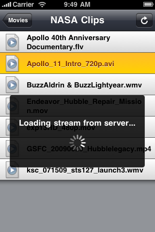

Please note: this article is part of the older "Objective-C era" on Cocoa with Love. I don't keep these articles up-to-date; please be wary of broken code or potentially out-of-date information. Read "A new era for Cocoa with Love" for more.
StreamToMe Version 1.1 available
The latest version of StreamToMe — for streaming audio and video from your Mac to your iPhone/iPod Touch — is now available on the App Store. It has only been one month since I released version 1.0 but I have lots of new changes to share.
New Features
You will need to download the latest version of ServeToMe to take advantage of these new features.
The "Seek to anywhere" update
StreamToMe version 1.1 adds a number of requested features, most prominent of which is "seek to anywhere". You no longer need to wait for the end of the file to be encoded before you jump ahead — you can seek to anywhere at anytime and it will "just work".
Remote WiFi and 3G access
StreamToMe now supports connections via 3G and from non-local WiFi locations. Bitrates between 96k and 1600k are chosen by the iPhone based on the available data rate. These lower bitrates are also available on local WiFi connections for situations where interference means a lower bitrate is required.
A remote connection requires that you have configured your Mac's network to make ServeToMe's port accessible remotely. This configuration is left to you since it is dependent on how you are connected to the internet, your modem/router and firewalls.
Password protection
To protect access to your files (especially when made available over the internet) you can now password protect the server.
Minor changes and fixes
Of course, there are numerous little fixes and changes too:
- Fixed playback of many common MOV codecs, so many more Quicktime MOV files will be supported.
- The server now only encodes video as needed, resulting in much lower average CPU usage.
- Fixes for occasional broken socket (network dropout) problems on Snow Leopard.
- Fixes for session ID problems that caused "The requested file couldn't be converted for streaming" to be incorrectly sent for supported files.
- Scroll indexes now used for large directories.
- Shinier file and folder icons.
Still coming...
I can't deliver everything all at once but the following frequently requested features are still planned for a future version:
- Windows support for ServeToMe
- Alternate audio tracks
- Subtitles
- Thumbnail previews
Screenshots
Here are some screenshots of the updated application in action:
WhereIsMyMac, a Snow Leopard CoreLocation project